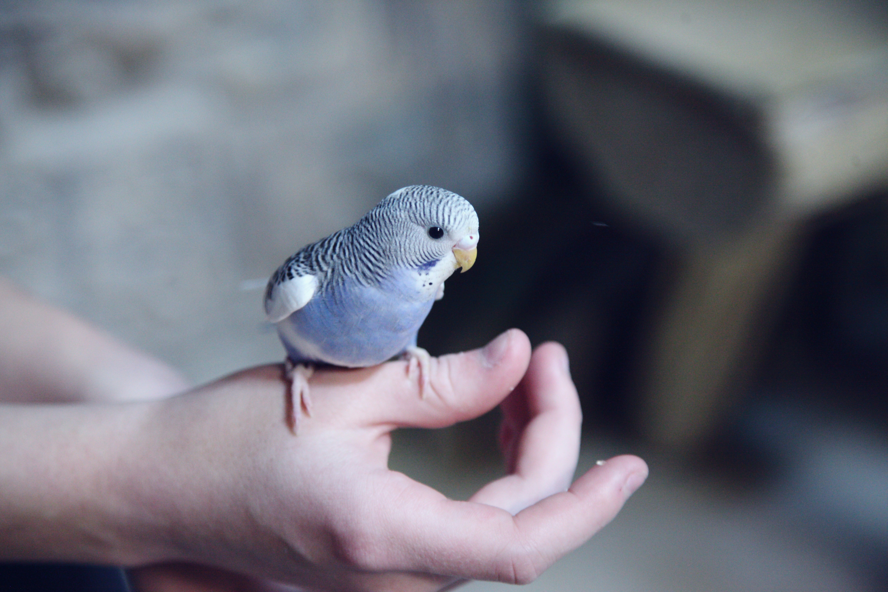

Birds




Birds are fascinating creatures, ranging from tiny Cuban bee hummingbirds, measuring about two inches long and weighing just over 1/20 of an ounce, to majestic ostriches. While most birds are capable of flight, there are exceptions. Each bird breed is unique, especially in terms of their relational needs and overall well-being.
Unfortunately, birds can experience sadness and depression, much like humans. Various
factors may
contribute to a bird's depression, such as illness (both physical and mental), loss of a companion, or
boredom. Look out for signs indicating your bird may be experiencing depression:
- * Reduced appetite
- * Increased irritability
- * Aggressive behavior
- * Songs with a different, more solemn tone

Consult with a Paradigm Pet Professional to ensure your bird is happy and healthy.
Get a free consultationHave questions about birds? Our FAQ page has answers to common questions.